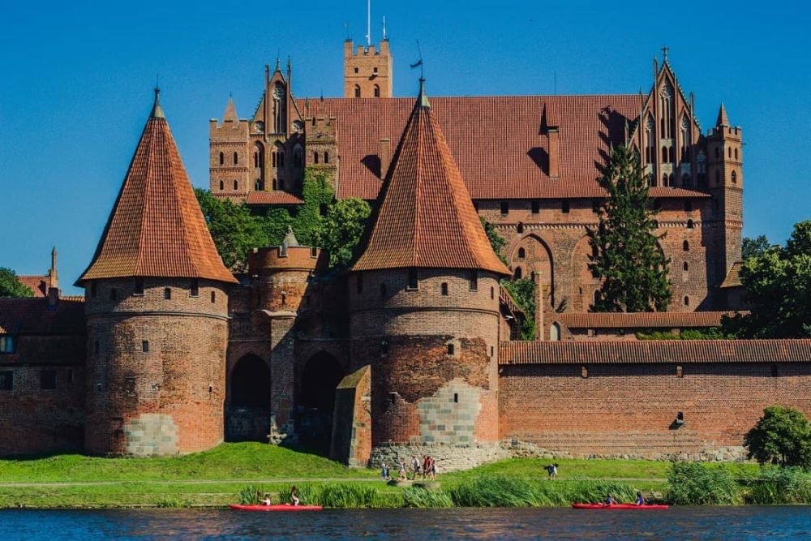

Descoperă Castelul Malbork - Cetatea medievală a Cavalerilor Teutoni
Castelul Malbork este o impresionantă cetate medievală situată în nordul Poloniei:
-

Arhitectură magnifică
Castelul este cel mai mare din lume construit din cărămizi și oferă un exemplu de arhitectură gotică splendidă.
-

Moștenire istorică
Castelul a fost inițial construit de Cavalerii Teutoni și a avut un rol important în istoria europeană.
-

Muzeu și expoziții
Castelul găzduiește un muzeu cuprinzător, oferind o privire în profunzime asupra evoluției și culturii medievale.
-

Tururi ghidate
Vizitele ghidate oferă povești captivante despre istoria și legendele castelului.
-

Împrejurimile pitorești
Zona înconjurătoare oferă peisaje frumoase și oportunități de relaxare în natură.
Concluzii
Castelul Malbork rămâne un monument istoric impresionant și o destinație fascinantă pentru cei pasionați de istorie și arhitectură.